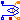
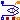
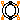
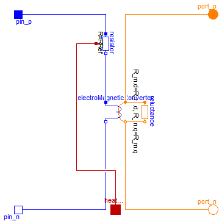
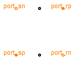
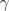
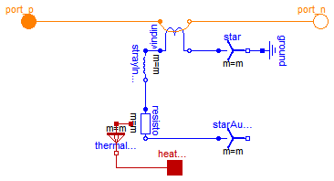
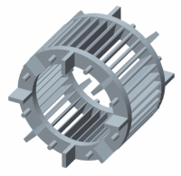
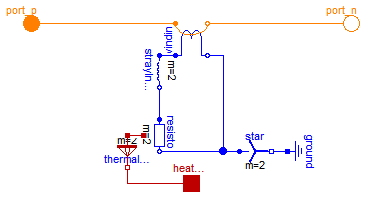
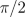

This package contains components for asynchronous induction machines and synchronous induction machines.
Extends from Modelica.Icons.Package (Icon for standard packages).
| Name | Description |
|---|---|
|  SinglePhaseWinding | Symmetric winding model coupling electrical and magnetic domain |
|  SymmetricMultiPhaseWinding | Symmetric winding model coupling electrical and magnetic domain |
|  RotorSaliencyAirGap | Air gap model with rotor saliency |
| SymmetricMultiPhaseCageWinding | Symmetrical rotor cage |
| SaliencyCageWinding | Rotor cage with saliency in d- and q-axis |

The single phase winding consists of a resistor, a symmetrical stray inductor and a single phase electro magnetic coupling.
SymmetricMultiPhaseWinding, SymmetricMultiPhaseCageWinding, SaliencyCageWinding RotorSaliencyAirGap
| Type | Name | Default | Description |
|---|---|---|---|
| Boolean | useHeatPort | false | Enable / disable (=fixed temperatures) thermal port |
| Resistance | RRef | Winding resistance per phase at TRef [Ohm] | |
| Temperature | TRef | Reference temperature of winding [K] | |
| LinearTemperatureCoefficient20 | alpha20 | Temperature coefficient of winding at 20 degC [1/K] | |
| Temperature | TOperational | Operational temperature of winding [K] | |
| Inductance | Lsigma | Winding stray inductance per phase [H] | |
| Real | effectiveTurns | 1 | Effective number of turns per phase |
| Angle | orientation | Orientation of the resulting fundamental wave field phasor [rad] |
| Type | Name | Description |
|---|---|---|
| PositivePin | pin_p | Positive pin |
| NegativePin | pin_n | Negative pin |
| NegativeMagneticPort | port_n | Negative complex magnetic port |
| PositiveMagneticPort | port_p | Positive complex magnetic port |
| HeatPort_a | heatPortWinding | Heat ports of winding resistor |
model SinglePhaseWinding "Symmetric winding model coupling electrical and magnetic domain"Modelica.Electrical.Analog.Interfaces.PositivePin pin_p "Positive pin"; Modelica.Electrical.Analog.Interfaces.NegativePin pin_n "Negative pin"; Modelica.Magnetic.FundamentalWave.Interfaces.NegativeMagneticPort port_n "Negative complex magnetic port"; Modelica.Magnetic.FundamentalWave.Interfaces.PositiveMagneticPort port_p "Positive complex magnetic port"; parameter Boolean useHeatPort=false "Enable / disable (=fixed temperatures) thermal port"; parameter Modelica.SIunits.Resistance RRef "Winding resistance per phase at TRef"; parameter Modelica.SIunits.Temperature TRef(start=293.15) "Reference temperature of winding"; parameter Modelica.Electrical.Machines.Thermal.LinearTemperatureCoefficient20 alpha20(start=0) "Temperature coefficient of winding at 20 degC"; final parameter Modelica.SIunits.LinearTemperatureCoefficient alphaRef= Modelica.Electrical.Machines.Thermal.convertAlpha(alpha20,TRef,293.15); parameter Modelica.SIunits.Temperature TOperational(start=293.15) "Operational temperature of winding"; parameter Modelica.SIunits.Inductance Lsigma "Winding stray inductance per phase"; parameter Real effectiveTurns = 1 "Effective number of turns per phase"; parameter Modelica.SIunits.Angle orientation "Orientation of the resulting fundamental wave field phasor";Modelica.Electrical.Analog.Basic.Resistor resistor( final useHeatPort=useHeatPort, final R=RRef, final T_ref=TRef, final alpha=alphaRef, final T=TOperational); Modelica.Magnetic.FundamentalWave.Components.SinglePhaseElectroMagneticConverter electroMagneticConverter( final effectiveTurns=effectiveTurns, final orientation=orientation); Modelica.Thermal.HeatTransfer.Interfaces.HeatPort_a heatPortWinding if useHeatPort "Heat ports of winding resistor"; Modelica.Magnetic.FundamentalWave.Components.Reluctance reluctance( final R_m(d=effectiveTurns^2/Lsigma, q=effectiveTurns^2/Lsigma)); equationconnect(pin_p, resistor.p); connect(electroMagneticConverter.pin_n, pin_n); connect(electroMagneticConverter.port_p, port_p); connect(electroMagneticConverter.port_n, port_n); connect(heatPortWinding, resistor.heatPort); connect(resistor.n, electroMagneticConverter.pin_p); connect(electroMagneticConverter.port_p, reluctance.port_p); connect(electroMagneticConverter.port_n, reluctance.port_n); end SinglePhaseWinding;
The symmetrical multi phase winding consists of a symmetrical winding resistor, a zero and stray inductor as well as a symmetrical multi phase electro magnetic coupling and a core loss model including heat port.
SinglePhaseWinding, SymmetricMultiPhaseCageWinding, SaliencyCageWinding RotorSaliencyAirGap
| Type | Name | Default | Description |
|---|---|---|---|
| Integer | m | 3 | Number of phases |
| Boolean | useHeatPort | false | Enable / disable (=fixed temperatures) thermal port |
| Resistance | RRef | Winding resistance per phase at TRef [Ohm] | |
| Temperature | TRef | Reference temperature of winding [K] | |
| LinearTemperatureCoefficient20 | alpha20 | Temperature coefficient of winding at 20 degC [1/K] | |
| Temperature | TOperational | Operational temperature of winding [K] | |
| Inductance | Lsigma | Winding stray inductance per phase [H] | |
| Inductance | Lzero | Zero sequence inductance of winding [H] | |
| Real | effectiveTurns | 1 | Effective number of turns per phase |
| Conductance | GcRef | Electrical reference core loss reluctance [S] |
| Type | Name | Description |
|---|---|---|
| PositivePlug | plug_p | Positive plug |
| NegativePlug | plug_n | Negative plug |
| NegativeMagneticPort | port_n | Negative complex magnetic port |
| PositiveMagneticPort | port_p | Positive complex magnetic port |
| HeatPort_a | heatPortWinding[m] | Heat ports of winding resistors |
| HeatPort_a | heatPortCore | Heat ports of winding resistor |
model SymmetricMultiPhaseWinding "Symmetric winding model coupling electrical and magnetic domain"Modelica.Electrical.MultiPhase.Interfaces.PositivePlug plug_p( final m=m) "Positive plug"; Modelica.Electrical.MultiPhase.Interfaces.NegativePlug plug_n( final m=m) "Negative plug"; Modelica.Magnetic.FundamentalWave.Interfaces.NegativeMagneticPort port_n "Negative complex magnetic port"; Modelica.Magnetic.FundamentalWave.Interfaces.PositiveMagneticPort port_p "Positive complex magnetic port"; parameter Integer m = 3 "Number of phases"; parameter Boolean useHeatPort=false "Enable / disable (=fixed temperatures) thermal port"; // Resistor model parameter Modelica.SIunits.Resistance RRef "Winding resistance per phase at TRef"; parameter Modelica.SIunits.Temperature TRef(start=293.15) "Reference temperature of winding"; parameter Modelica.Electrical.Machines.Thermal.LinearTemperatureCoefficient20 alpha20(start=0) "Temperature coefficient of winding at 20 degC"; final parameter Modelica.SIunits.LinearTemperatureCoefficient alphaRef= Modelica.Electrical.Machines.Thermal.convertAlpha(alpha20,TRef,293.15); parameter Modelica.SIunits.Temperature TOperational(start=293.15) "Operational temperature of winding"; parameter Modelica.SIunits.Inductance Lsigma "Winding stray inductance per phase"; parameter Modelica.SIunits.Inductance Lzero "Zero sequence inductance of winding"; parameter Real effectiveTurns = 1 "Effective number of turns per phase"; parameter Modelica.SIunits.Conductance GcRef "Electrical reference core loss reluctance";Modelica.Magnetic.FundamentalWave.Components.MultiPhaseElectroMagneticConverter electroMagneticConverter( final m=m, final effectiveTurns=fill(effectiveTurns, m), final orientation=Functions.symmetricOrientation(m)); Modelica.Electrical.MultiPhase.Basic.ZeroInductor zeroInductor( final m=m, final Lzero=Lzero) "Zero sequence inductance of winding"; Modelica.Electrical.MultiPhase.Basic.Resistor resistor( final m=m, final useHeatPort=useHeatPort, final R=fill(RRef, m), final T_ref=fill(TRef,m), final alpha=fill(alphaRef,m), final T=fill(TOperational,m)) "Winding resistor"; Thermal.HeatTransfer.Interfaces.HeatPort_a heatPortWinding[m] if useHeatPort "Heat ports of winding resistors"; Thermal.HeatTransfer.Interfaces.HeatPort_a heatPortCore if useHeatPort "Heat ports of winding resistor"; Modelica.Magnetic.FundamentalWave.Components.EddyCurrent core(final G=( m/2)*GcRef/effectiveTurns^2, final useHeatPort=useHeatPort) "Core loss model (currently eddy currents only)"; Modelica.Magnetic.FundamentalWave.Components.Reluctance strayReluctance( final R_m(d=3*effectiveTurns^2/2/Lsigma, q=3*effectiveTurns^2/2/ Lsigma)) "Stray reluctance equivalent to ideally coupled stray inductances"; equationconnect(plug_p, resistor.plug_p); connect(resistor.plug_n, zeroInductor.plug_p); connect(zeroInductor.plug_n, electroMagneticConverter.plug_p); connect(electroMagneticConverter.plug_n, plug_n); connect(electroMagneticConverter.port_p, port_p); connect(resistor.heatPort, heatPortWinding); connect(electroMagneticConverter.port_n, core.port_p); connect(core.port_n, port_n); connect(core.heatPort, heatPortCore); connect(strayReluctance.port_n, core.port_n); connect(strayReluctance.port_p, electroMagneticConverter.port_p); end SymmetricMultiPhaseWinding;

This salient air gap model can be used for machines with uniform airgaps and for machines with rotor saliencies. The air gap model is not symmetrical towards stator and rotor since it is assumed the saliency always refers to the rotor. The saliency of the air gap is represented by a main field inductance in the d- and q-axis.
For the mechanical interaction of the air gap model with the stator and the rotor it is equipped with to rotational connectors. The torques acting on both connectors have the same absolute values but different signs. The difference between the stator and the rotor angle, , is required for the transformation of the magnetic stator quantities to the rotor side.
The air gap model has two magnetic stator and two magnetic rotor ports. The magnetic potential difference and the magnetic flux of the stator (superscript s) are transformed to the rotor fixed reference frame (superscript r). The effective reluctances of the main field with respect to the d- and q-axis are considered then in the balance equations

according to the following figure.

|
SinglePhaseWinding, SymmetricMultiPhaseWinding, SymmetricMultiPhaseCageWinding SaliencyCageWinding
| Type | Name | Default | Description |
|---|---|---|---|
| Integer | p | Number of pole pairs | |
| SalientInductance | L0 | Salient inductance of a single unchorded coil w.r.t. the fundamental wave |
| Type | Name | Description |
|---|---|---|
| PositiveMagneticPort | port_sp | Positive complex magnetic stator port |
| NegativeMagneticPort | port_sn | Negative complex magnetic stator port |
| PositiveMagneticPort | port_rp | Positive complex magnetic rotor port |
| NegativeMagneticPort | port_rn | Negative complex magnetic rotor port |
| Flange_a | flange_a | Flange of the rotor |
| Flange_a | support | Support at which the reaction torque is acting |
model RotorSaliencyAirGap "Air gap model with rotor saliency" import Modelica.Constants.pi;Interfaces.PositiveMagneticPort port_sp "Positive complex magnetic stator port"; Interfaces.NegativeMagneticPort port_sn "Negative complex magnetic stator port"; Interfaces.PositiveMagneticPort port_rp "Positive complex magnetic rotor port"; Interfaces.NegativeMagneticPort port_rn "Negative complex magnetic rotor port"; Modelica.Mechanics.Rotational.Interfaces.Flange_a flange_a "Flange of the rotor"; Modelica.Mechanics.Rotational.Interfaces.Flange_a support "Support at which the reaction torque is acting"; parameter Integer p "Number of pole pairs"; parameter Modelica.Magnetic.FundamentalWave.Types.SalientInductance L0( d(start=1), q(start=1)) "Salient inductance of a single unchorded coil w.r.t. the fundamental wave"; final parameter Modelica.Magnetic.FundamentalWave.Types.SalientReluctance R_m( d=1/L0.d, q=1/L0.q) "Reluctance of the air gap model"; // Complex phasors of magnetic potential differences Modelica.SIunits.ComplexMagneticPotentialDifference V_mss "Complex magnetic potential difference of stator w.r.t. stator reference frame"; Modelica.SIunits.ComplexMagneticPotentialDifference V_msr "Complex magnetic potential difference of stator w.r.t. rotor reference frame"; Modelica.SIunits.ComplexMagneticPotentialDifference V_mrr "Complex magnetic potential difference of rotor w.r.t. rotor reference frame"; // Modelica.SIunits.ComplexMagneticPotentialDifference V_mrs // "Complex magnetic potential difference of rotor w.r.t. stator reference frame"; // Complex phasors of magnetic fluxes Modelica.SIunits.ComplexMagneticFlux Phi_ss "Complex magnetic potential difference of stator w.r.t. stator reference frame"; Modelica.SIunits.ComplexMagneticFlux Phi_sr "Complex magnetic potential difference of stator w.r.t. rotor reference frame"; Modelica.SIunits.ComplexMagneticFlux Phi_rr "Complex magnetic potential difference of rotor w.r.t. rotor reference frame"; // Modelica.SIunits.ComplexMagneticFlux Phi_rs // "Complex magnetic potential difference of rotor w.r.t. stator reference frame"; // Electrical torque and mechanical angle Modelica.SIunits.Torque tauElectrical "Electrical torque"; // Modelica.SIunits.Torque tauTemp "Electrical torque"; Modelica.SIunits.Angle gamma "Electrical angle between rotor and stator"; Complex rotator "Equivalent vector representation of orientation"; equation // Stator flux into positive stator port port_sp.Phi = Phi_ss; // Balance of stator flux port_sp.Phi + port_sn.Phi = Complex(0,0); // Rotor flux into positive rotor port port_rp.Phi = Phi_rr; // Balance of rotor flux port_rp.Phi + port_rn.Phi = Complex(0,0); // Magneto motive force of stator port_sp.V_m - port_sn.V_m = V_mss; // Magneto motive force of stator port_rp.V_m - port_rn.V_m = V_mrr; // Transformation of fluxes between stator and rotor fixed frame, if wanted // Phi_rs.re = + Phi_rr.re * cos(gamma) - Phi_rr.im * sin(gamma); // Phi_rs.im = + Phi_rr.re * sin(gamma) + Phi_rr.im * cos(gamma); // Alternative transformation // Phi_rr.re = + Phi_rs.re * cos(gamma) + Phi_rs.im * sin(gamma); // Phi_rr.im = - Phi_rs.re * sin(gamma) + Phi_rs.im * cos(gamma); // Transformed stator flux is not needed // Phi_sr.re = + Phi_ss.re * cos(gamma) + Phi_ss.im * sin(gamma); // Phi_sr.im = - Phi_ss.re * sin(gamma) + Phi_ss.im * cos(gamma); Phi_sr = Phi_ss * Modelica.ComplexMath.conj(rotator); // Alternative transformation // Phi_ss.re = + Phi_sr.re * cos(gamma) - Phi_sr.im * sin(gamma); // Phi_ss.im = + Phi_sr.re * sin(gamma) + Phi_sr.im * cos(gamma); // Stator flux w.r.t. the rotor fixed frame and rotor flux are equal Phi_sr = Phi_rr; // Transformation of magnetic potential difference between stator and rotor fixed frame // V_mrs.re = + V_mrr.re * cos(gamma) - V_mrr.im * sin(gamma); // V_mrs.im = + V_mrr.re * sin(gamma) + V_mrr.im * cos(gamma); // V_mrr.re = + V_mrs.re * cos(gamma) + V_mrs.im * sin(gamma); // V_mrr.im = - V_mrs.re * sin(gamma) + V_mrs.im * cos(gamma); // V_msr.re = + V_mss.re * cos(gamma) + V_mss.im * sin(gamma); // V_msr.im = - V_mss.re * sin(gamma) + V_mss.im * cos(gamma); V_msr = V_mss * Modelica.ComplexMath.conj(rotator); // V_msr.re = + V_mss.re * cos(gamma) + V_mss.im * sin(gamma); // V_msr.im = - V_mss.re * sin(gamma) + V_mss.im * cos(gamma); // Local balance of maganeto motive force (pi/2.0) * (V_mrr.re + V_msr.re) = Phi_rr.re*R_m.d; (pi/2.0) * (V_mrr.im + V_msr.im) = Phi_rr.im*R_m.q; // Torque tauElectrical = - (pi*p/2.0)*(Phi_ss.im * V_mss.re - Phi_ss.re * V_mss.im); flange_a.tau = -tauElectrical; support.tau = tauElectrical; // Electrical angle between stator and rotor gamma = p*(flange_a.phi-support.phi); rotator = Modelica.ComplexMath.exp(Complex(0,gamma));end RotorSaliencyAirGap;


The symmetric rotor cage model of this library does not consist of rotor bars and end rings. Instead the symmetric cage is modeled by an equivalent symmetrical winding. The rotor cage model consists of
 phases. If the cage is modeled by equivalent stator winding parameters, the number of effective turns,
phases. If the cage is modeled by equivalent stator winding parameters, the number of effective turns,  , has to be chosen equivalent to the effective number of stator turns.
, has to be chosen equivalent to the effective number of stator turns.
SinglePhaseWinding, SymmetricMultiPhaseWinding, SaliencyCageWinding, RotorSaliencyAirGap
Extends from Modelica.Magnetic.FundamentalWave.Interfaces.PartialTwoPort (Two magnetic ports for graphical modeling).
| Type | Name | Default | Description |
|---|---|---|---|
| Integer | m | 3 | Number of phases |
| Boolean | useHeatPort | false | Enable / disable (=fixed temperatures) thermal port |
| Resistance | RRef | Winding resistance per phase at TRef [Ohm] | |
| Temperature | TRef | Reference temperature of winding [K] | |
| LinearTemperatureCoefficient20 | alpha20 | Temperature coefficient of winding at 20 degC [1/K] | |
| Temperature | TOperational | Operational temperature of winding [K] | |
| Inductance | Lsigma | Cage stray inductance [H] | |
| Real | effectiveTurns | 1 | Effective number of turns |
| Type | Name | Description |
|---|---|---|
| PositiveMagneticPort | port_p | Positive complex magnetic port |
| NegativeMagneticPort | port_n | Negative complex magnetic port |
| HeatPort_a | heatPortWinding | Heat ports of winding resistor |
model SymmetricMultiPhaseCageWinding "Symmetrical rotor cage"
import Modelica.Constants.pi;
extends Modelica.Magnetic.FundamentalWave.Interfaces.PartialTwoPort;
parameter Integer m = 3 "Number of phases";
parameter Boolean useHeatPort=false
"Enable / disable (=fixed temperatures) thermal port";
parameter Modelica.SIunits.Resistance RRef
"Winding resistance per phase at TRef";
parameter Modelica.SIunits.Temperature TRef(start=293.15)
"Reference temperature of winding";
parameter Modelica.Electrical.Machines.Thermal.LinearTemperatureCoefficient20
alpha20(start=0) "Temperature coefficient of winding at 20 degC";
final parameter Modelica.SIunits.LinearTemperatureCoefficient alphaRef=
Modelica.Electrical.Machines.Thermal.convertAlpha(alpha20,TRef,293.15);
parameter Modelica.SIunits.Temperature TOperational(start=293.15)
"Operational temperature of winding";
parameter Modelica.SIunits.Inductance Lsigma "Cage stray inductance";
parameter Real effectiveTurns = 1 "Effective number of turns";
Modelica.SIunits.Current i[m](each start=0)=strayInductor.i "Cage currents";
Modelica.Magnetic.FundamentalWave.Components.MultiPhaseElectroMagneticConverter
winding(
final m=m,
final orientation={2*pi*(k - 1)/m for k in 1:m},
final effectiveTurns=fill(effectiveTurns, m)) "Symmetric winding";
Modelica.Electrical.MultiPhase.Basic.Inductor strayInductor(
final m=m,
final L=fill(Lsigma, m));
Modelica.Electrical.MultiPhase.Basic.Resistor resistor(
final useHeatPort=useHeatPort,
final m=m,
final R=fill(RRef, m),
final T_ref=fill(TRef, m),
final alpha=fill(alphaRef, m),
final T=fill(TRef, m));
Modelica.Electrical.MultiPhase.Basic.Star star(
final m=m);
Modelica.Electrical.Analog.Basic.Ground ground;
Thermal.HeatTransfer.Interfaces.HeatPort_a heatPortWinding if useHeatPort
"Heat ports of winding resistor";
Thermal.HeatTransfer.Components.ThermalCollector thermalCollector(
final m=m) if useHeatPort
"Connector of thermal rotor resistance heat ports";
Modelica.Electrical.MultiPhase.Basic.Star starAuxiliary(
final m=m);
equation
connect(port_p, winding.port_p);
connect(winding.port_n, port_n);
connect(ground.p,star. pin_n);
connect(strayInductor.plug_n, resistor.plug_p);
connect(strayInductor.plug_p, winding.plug_p);
connect(star.plug_p, winding.plug_n);
connect(thermalCollector.port_a, resistor.heatPort);
connect(thermalCollector.port_b, heatPortWinding);
connect(resistor.plug_n, starAuxiliary.plug_p);
end SymmetricMultiPhaseCageWinding;

The salient cage model is a two axis model with two phases. The electro magnetic coupling therefore is also two phase coupling model. The angles of the two orientations are 0 and . This way an asymmetrical rotor cage with different resistances and stray inductances in d- and q-axis can be modeled.
SinglePhaseWinding, SymmetricMultiPhaseWinding, SymmetricMultiPhaseCageWinding RotorSaliencyAirGap
Extends from Modelica.Magnetic.FundamentalWave.Interfaces.PartialTwoPort (Two magnetic ports for graphical modeling).
| Type | Name | Default | Description |
|---|---|---|---|
| Boolean | useHeatPort | false | Enable / disable (=fixed temperatures) thermal port |
| SalientResistance | RRef | Salient cage resistance | |
| Temperature | TRef | Reference temperature of winding [K] | |
| LinearTemperatureCoefficient20 | alpha20 | Temperature coefficient of winding at 20 degC [1/K] | |
| Temperature | TOperational | Operational temperature of winding [K] | |
| SalientInductance | Lsigma | Salient cage stray inductance | |
| Real | effectiveTurns | 1 | Effective number of turns |
| Type | Name | Description |
|---|---|---|
| PositiveMagneticPort | port_p | Positive complex magnetic port |
| NegativeMagneticPort | port_n | Negative complex magnetic port |
| HeatPort_a | heatPortWinding | Heat ports of winding resistor |
model SaliencyCageWinding "Rotor cage with saliency in d- and q-axis"
extends Modelica.Magnetic.FundamentalWave.Interfaces.PartialTwoPort;
parameter Boolean useHeatPort=false
"Enable / disable (=fixed temperatures) thermal port";
parameter Modelica.Magnetic.FundamentalWave.Types.SalientResistance
RRef(
d(start=1), q(start=1)) "Salient cage resistance";
parameter Modelica.SIunits.Temperature TRef(start=293.15)
"Reference temperature of winding";
parameter Modelica.Electrical.Machines.Thermal.LinearTemperatureCoefficient20
alpha20(start=0) "Temperature coefficient of winding at 20 degC";
final parameter Modelica.SIunits.LinearTemperatureCoefficient alphaRef=
Modelica.Electrical.Machines.Thermal.convertAlpha(alpha20,TRef,293.15);
parameter Modelica.SIunits.Temperature TOperational(start=293.15)
"Operational temperature of winding";
parameter Modelica.Magnetic.FundamentalWave.Types.SalientInductance
Lsigma(
d(start=1), q(start=1)) "Salient cage stray inductance";
parameter Real effectiveTurns = 1 "Effective number of turns";
Modelica.Magnetic.FundamentalWave.Types.SalientCurrent i(
d(start=0, fixed=true)=strayInductor.i[1],
q(start=0, fixed=true)=strayInductor.i[2]) "Cage current";
Modelica.Magnetic.FundamentalWave.Components.MultiPhaseElectroMagneticConverter
winding(
final m=2,
final orientation={0,Modelica.Constants.pi/2},
final effectiveTurns=fill(effectiveTurns, 2)) "Symmetric winding";
Modelica.Electrical.MultiPhase.Basic.Inductor strayInductor(
final m=2,
final L={Lsigma.d,Lsigma.q});
Modelica.Electrical.MultiPhase.Basic.Resistor resistor(
final useHeatPort=useHeatPort,
final m=2,
final R={RRef.d,RRef.q},
final T_ref=fill(TRef, 2),
final alpha=fill(alphaRef, 2),
final T=fill(TOperational, 2));
Modelica.Electrical.MultiPhase.Basic.Star star(
final m=2);
Modelica.Electrical.Analog.Basic.Ground ground;
Thermal.HeatTransfer.Interfaces.HeatPort_a heatPortWinding if
useHeatPort
"Heat ports of winding resistor";
Thermal.HeatTransfer.Components.ThermalCollector thermalCollector(final m=2) if useHeatPort
"Connector of thermal rotor resistance heat ports";
equation
connect(port_p, winding.port_p);
connect(winding.port_n, port_n);
connect(ground.p,star. pin_n);
connect(strayInductor.plug_n, resistor.plug_p);
connect(winding.plug_n, resistor.plug_n);
connect(star.plug_p, winding.plug_n);
connect(strayInductor.plug_p, winding.plug_p);
connect(thermalCollector.port_b, heatPortWinding);
connect(resistor.heatPort, thermalCollector.port_a);
end SaliencyCageWinding;